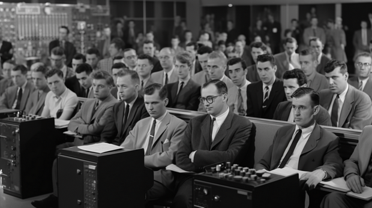
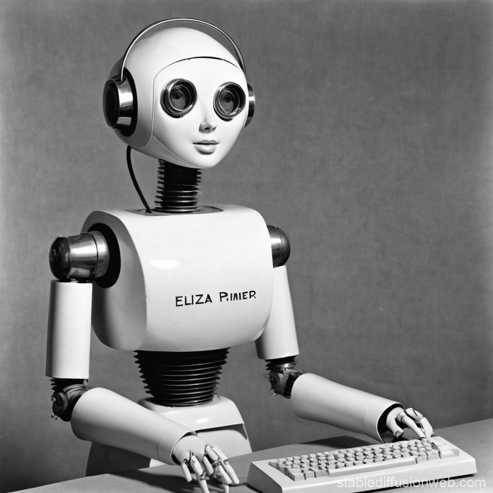
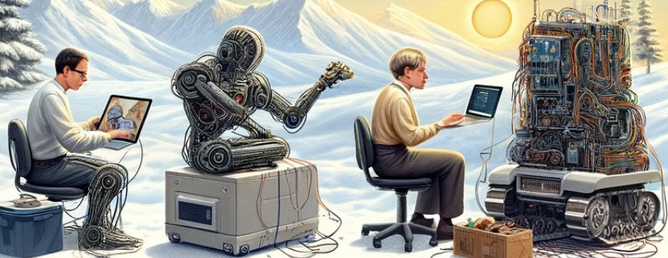
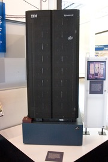
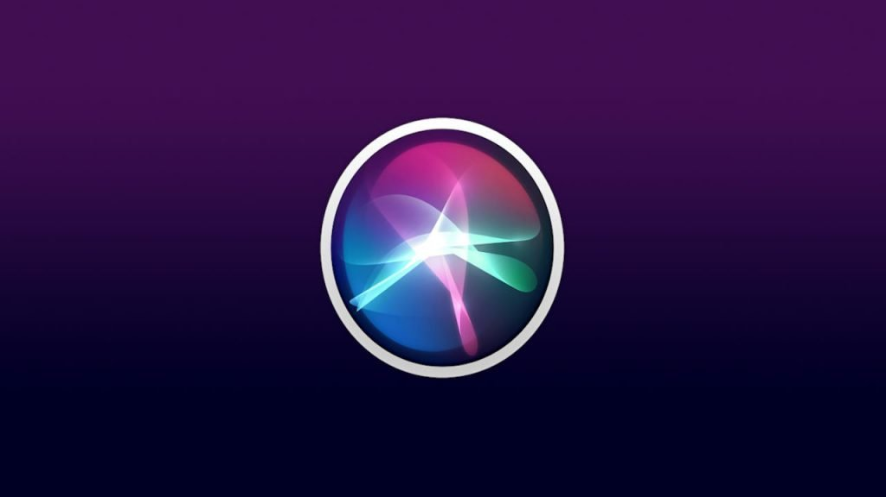
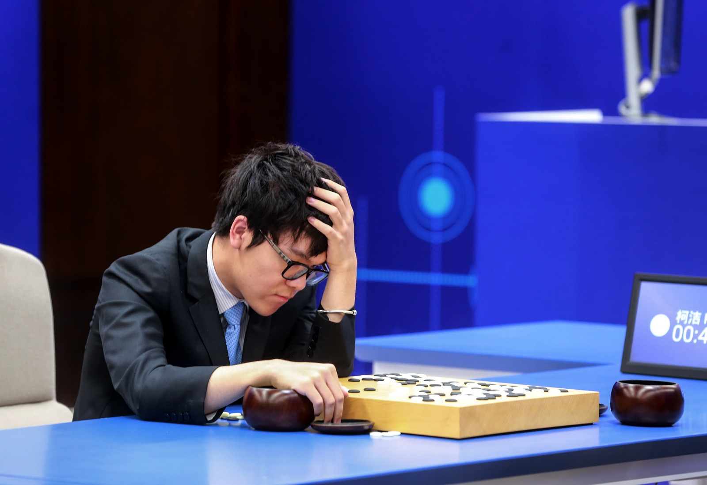
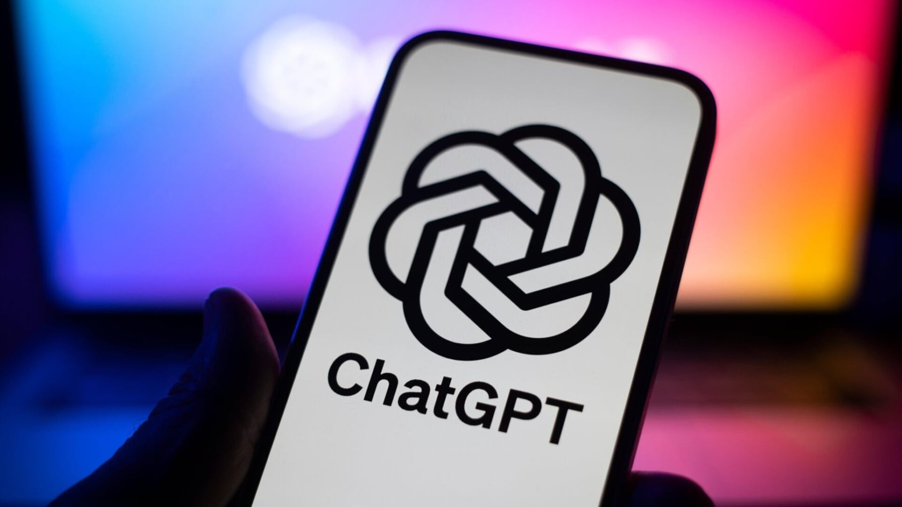
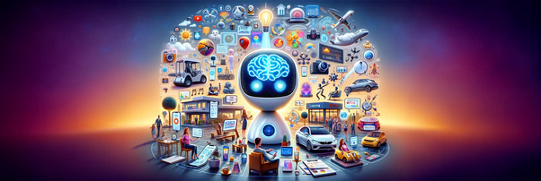
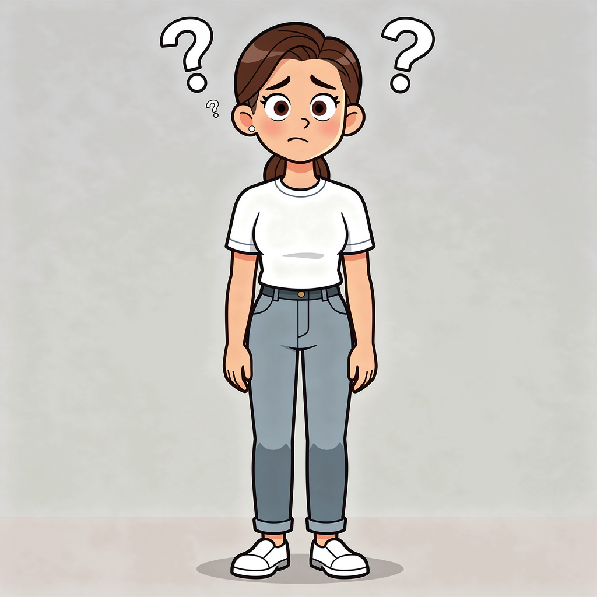

Turing Test
Alan Turing stellt die Frage, ob Maschinen denken können, und beschreibt mit dem Turing-Test einen frühen Maßstab für künstliche Intelligenz.
KI-Geschichte
Von Alan Turings Gedankenexperiment bis zu modernen Sprachmodellen: dieser Zeitstrahl zeigt, wie sich KI über Jahrzehnte entwickelt hat.
Alan Turing stellt die Frage, ob Maschinen denken können, und beschreibt mit dem Turing-Test einen frühen Maßstab für künstliche Intelligenz.

Auf der Dartmouth-Konferenz wird der Begriff "Artificial Intelligence" geprägt. Dieses Treffen gilt als offizieller Startpunkt der KI-Forschung.

Mit ELIZA entsteht einer der ersten Chatbots. Das Programm simuliert Gespräche und zeigt früh, wie Menschen auf scheinbar intelligente Systeme reagieren.

Expertensysteme erleben einen Boom, doch überhöhte Erwartungen führen später zu Enttäuschung, geringerer Finanzierung und dem sogenannten KI-Winter.

IBMs Schachcomputer Deep Blue schlägt Garri Kasparov. Das Ereignis zeigt, dass Maschinen Menschen in hochkomplexen Denkaufgaben übertreffen können.
Fortschritte bei neuronalen Netzen und Rechenleistung machen Deep Learning zu einem zentralen Motor moderner KI-Entwicklung.

Sprachassistenten wie Siri halten Einzug in den Alltag, während Watson bei Quizshows zeigt, wie leistungsfähig KI bei Wissensverarbeitung geworden ist.

AlphaGo besiegt einen der besten Go-Spieler der Welt. Das gilt als Meilenstein, weil Go lange als besonders schwierig für Maschinen galt.

Mit ChatGPT wird generative KI für Millionen Menschen direkt erlebbar. Texte, Ideen und Dialoge entstehen plötzlich in Sekundenschnelle.

KI wird in Schule, Arbeit, Medien, Medizin und Alltag sichtbar. Die Technologie ist nicht mehr nur Forschung, sondern Teil des täglichen Lebens.

Die Entwicklung geht weiter. Entscheidend wird sein, wie Menschen Regeln, Verantwortung und kreative Nutzung von KI gemeinsam gestalten.